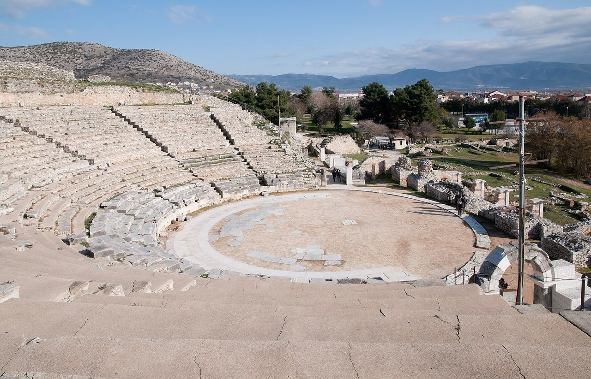
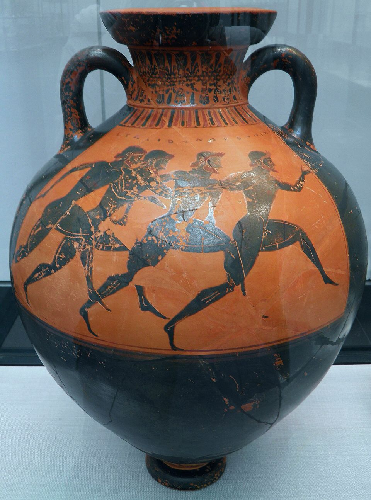
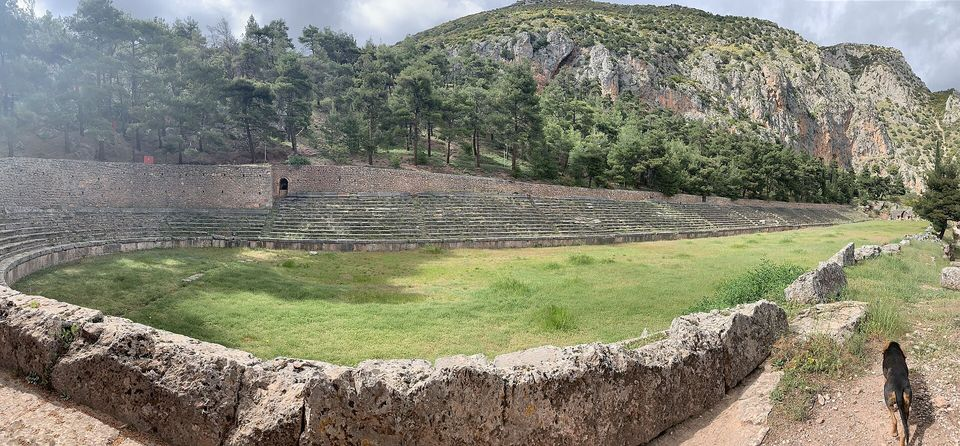
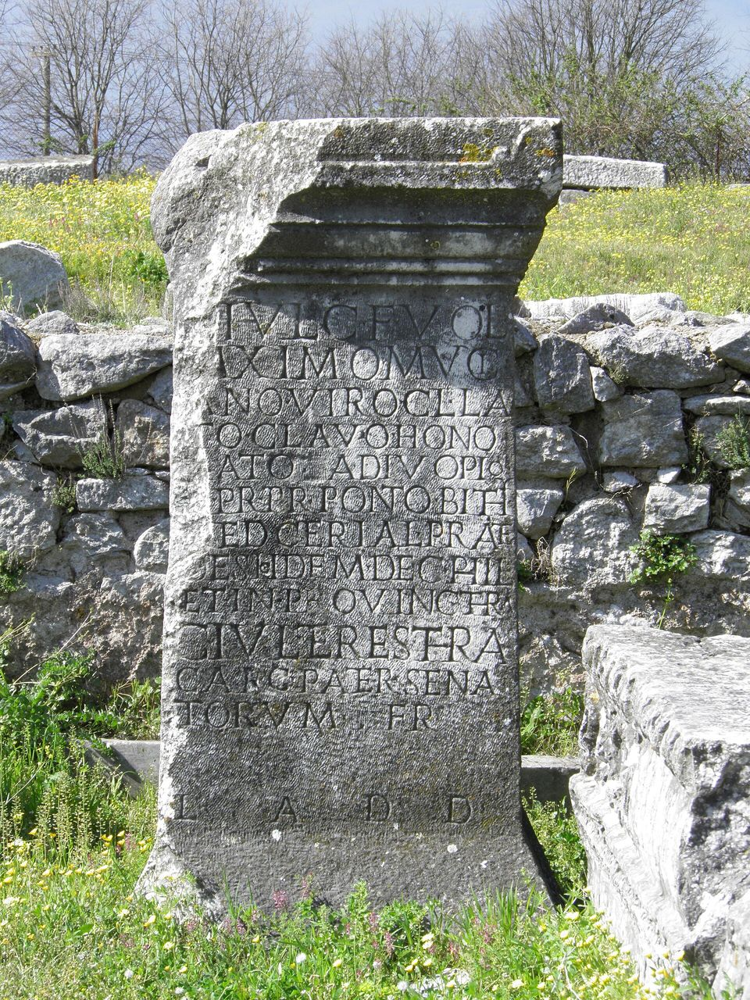
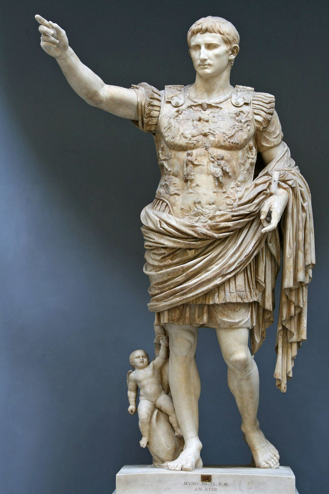

Parada 7 · Para ir mais fundo
Olhos na linha de chegada
Lição 7Paulo se descreve como um corredor que ainda não chegou, não olha para trás e não desiste
Sete trechos
Esta página é uma corrida em sete trechos: o primeiro mostra a pista dos jogos gregos; os outros seis seguem Filipenses 3.12 a 21, da largada à linha de chegada.
Na lição 6, Paulo passou o próprio currículo para a coluna da perda para ganhar a Cristo. Agora ele mostra o que faz com o tempo que tem: corre atrás desse prêmio.
Baseado na Lição 7 da revista Lições Bíblicas Jovens (CPAD), com textos bíblicos da ARC.
Slides da aulaA mesma corrida em 23 slides para projetar, com notas do professor.
Abrir os slidesAntes da largada
As perguntas da Orientação Pedagógica da revista, para responder só para você.
- Existe alguma culpa, fracasso ou decepção do passado que está impedindo meu crescimento espiritual?
- Tenho buscado conhecer mais a Cristo por meio da oração e da Palavra?
- Quais distrações têm tentado tirar meus olhos do alvo?
- Minha vida demonstra que eu pertenço ao Reino de Deus?
A revista pede para enfatizar que "o cristão nunca deve acomodar-se espiritualmente e que o passado não pode impedir o avanço na caminhada cristã".
Trecho 1 · A pista · o cenário
A pista


No mundo grego, os jogos eram uma paixão. A prova mais famosa de Olímpia era a corrida do estádio: uma volta só, numa pista de cerca de 192 metros, mais ou menos os 200 metros rasos de hoje. Durante as primeiras olimpíadas, foi a única prova. O vencedor não ganhava medalha nem dinheiro dos juízes: recebia uma coroa de folhas de oliveira, e a fama na sua cidade.
Perto de Corinto aconteciam os Jogos Ístmicos, também com uma coroa de folhas como prêmio. Paulo conhecia bem esse mundo e usou a imagem mais de uma vez:
1 Coríntios 9.24 e 25 · ARC
Não sabeis vós que os que correm no estádio, todos, na verdade, correm, mas um só leva o prêmio? Correi de tal maneira que o alcanceis. E todo aquele que luta de tudo se abstém; eles o fazem para alcançar uma coroa corruptível, nós, porém, uma incorruptível.
Em Filipos, o grande espaço de espetáculos era o teatro, encostado no monte, construído no tempo de Filipe II e reformado pelos romanos, que mais tarde o adaptaram para lutas e espetáculos de arena. É lá que acontece a Parada 7 da Expedição.
Depois de jogar fora o próprio currículo (lição 6), Paulo não fica parado olhando para a lixeira. Ele se descreve como um corredor "consciente e persistente; alguém que não está disposto a desistir por nada, até que conquiste a vitória" (revista, Introdução).
Fontes: World History Encyclopedia, "Stadium" · FRANZ, Gordon. "The Isthmian Games" (Life and Land) · Bíblia Sagrada, Almeida Revista e Corrigida (ARC). Sociedade Bíblica do Brasil. · Lições Bíblicas Jovens, 4º trimestre de 2026, Lição 7
Trecho 2 · Ainda não cheguei · Fp 3.12
Ainda não cheguei
Filipenses 3.12 · ARC
Não que já a tenha alcançado ou que seja perfeito; mas prossigo para alcançar aquilo para o que fui também preso por Cristo Jesus.
Quem fala é o apóstolo que fundou igrejas, escreveu cartas, viu Cristo ressuscitado e está preso pelo evangelho. E ele diz: ainda não cheguei. A revista explica que Paulo não está dizendo que é fraco ou despreparado: diante da "glória do conhecimento completo de Cristo", ele simplesmente reconhece que ainda não alcançou o alvo de Fp 3.10 e 11 (tópico I.1).
Isso era o contrário do que diziam os judaizantes, que se apresentavam como já completos. "As melhores pessoas reconhecem sua imperfeição no estado presente [...] Possuir a verdadeira graça gera o desejo por mais graça" (revista, I.1).
Alcançar quem me alcançou
O versículo tem um jogo de palavras. "Alcançar" e "fui preso" são o mesmo verbo grego, katalambánō: agarrar, tomar posse. Paulo corre para agarrar aquilo para o qual Cristo o agarrou primeiro, no caminho de Damasco. Ele não corre para ser aceito; corre porque já foi alcançado.
E repare na ironia dos versículos 12 e 15. Paulo diz que não é "perfeito" (teleióō, completo, terminado) e logo depois fala de "todos quantos já somos perfeitos" (téleioi, maduros). O cristão maduro é justamente o que sabe que ainda não terminou.
Filipenses 1.6 · ARC
Tendo por certo isto mesmo: que aquele que em vós começou a boa obra a aperfeiçoará até ao Dia de Jesus Cristo.
Fontes: Concordância de Strong, G2638 katalambánō · Concordância de Strong, G5048 teleióō · Bíblia Sagrada, Almeida Revista e Corrigida (ARC). Sociedade Bíblica do Brasil. · Lições Bíblicas Jovens, 4º trimestre de 2026, Lição 7
Trecho 3 · Prossigo · Fp 3.12 e 14
Prossigo
Texto principal da lição · Filipenses 3.14 · ARC
prossigo para o alvo, pelo prêmio da soberana vocação de Deus em Cristo Jesus.
"Prossigo" traduz diṓkō: correr atrás, perseguir. É exatamente o verbo que Paulo usou poucas linhas antes para descrever o seu passado: "segundo o zelo, perseguidor da igreja" (Fp 3.6). O Subsídio da revista chama atenção para isso. O homem que corria atrás da igreja para destruí-la agora corre atrás de Cristo com a mesma energia, só que na direção certa.
Deus usa quem falha, mas não usa quem desiste
Essa é a frase do tópico I.2 da revista. "Muitas pessoas, por quererem ser mais justas que Deus, desistem da jornada e param no meio do caminho por causa de seus pecados; outras desistem porque se sentem sem forças para prosseguir." Pedro falhou feio: negou Jesus três vezes e "chorou amargamente" (Lc 22.62). Mas voltou, e foi restaurado.
Isaías 40.31 · ARC
Mas os que esperam no Senhor renovarão as suas forças e subirão com asas como águias; correrão e não se cansarão; caminharão e não se fatigarão.
O tópico I.3 aponta o perigo oposto: achar que já chegou. "O grande problema de muitas pessoas reside exatamente aqui: acreditam que já tenham chegado ao fim das suas conquistas espirituais e, por isso, abandonam as disciplinas da vida cristã, como a oração, a leitura da Palavra e a consagração."
Oseias 6.3 · ARC
Conheçamos e prossigamos em conhecer o Senhor: como a alva, será a sua saída; e ele a nós virá como a chuva, como chuva serôdia que rega a terra.
Você concorda que Deus pode usar quem falha, mas não usa quem desiste? "Seguir a Cristo é escolher continuar, mesmo quando há falhas, cansaço ou dificuldades, confiando que Deus sustenta quem não desiste" (Ponto importante).
Fontes: Concordância de Strong, G1377 diṓkō · PATTERSON, Dorothy Kelley; KELLEY, Rhonda Harrington · Bíblia Sagrada, Almeida Revista e Corrigida (ARC). Sociedade Bíblica do Brasil. · Lições Bíblicas Jovens, 4º trimestre de 2026, Lição 7
Trecho 4 · Uma coisa faço · Fp 3.13
Uma coisa faço
Filipenses 3.13 · ARC
Irmãos, quanto a mim, não julgo que o haja alcançado; mas uma coisa faço, e é que, esquecendo-me das coisas que atrás ficam e avançando para as que estão diante de mim,
Paulo fazia muitas coisas: pregava, escrevia, costurava tendas, cuidava de igrejas. Mas, como um atleta, ele concentrava tudo numa direção. A revista explica que "essa 'coisa', assim, não era a única, porém a mais importante a ser feita, a qual, sendo realizada, todo o restante daria certo" (tópico II).
A Bíblia tem outros exemplos dessa "uma coisa":
Salmos 27.4 · ARC
Uma coisa pedi ao Senhor e a buscarei: que possa morar na Casa do Senhor todos os dias da minha vida, para contemplar a formosura do Senhor e aprender no seu templo.
Lucas 10.41 e 42 · ARC
E, respondendo Jesus, disse-lhe: Marta, Marta, estás ansiosa e afadigada com muitas coisas, mas uma só é necessária; e Maria escolheu a boa parte, a qual não lhe será tirada.
A revista lembra que a juventude vive "em uma sociedade marcada pela pressa, pelas distrações e pela busca de resultados imediatos" (Interação). Uma vida com muitas abas abertas e nenhuma prioridade cansa e não chega a lugar nenhum. "A caminhada cristã não é uma corrida de velocidade, mas uma jornada de perseverança, disciplina e alvo."
Fontes: Bíblia Sagrada, Almeida Revista e Corrigida (ARC). Sociedade Bíblica do Brasil. · Lições Bíblicas Jovens, 4º trimestre de 2026, Lição 7
Trecho 5 · Esquecendo e avançando · Fp 3.13 e 14
Esquecendo e avançando
Esquecer o que ficou para trás
"Esquecendo-me" (epilanthánomai) não é amnésia. Paulo lembrava muito bem do seu passado: acabou de contá-lo em Fp 3.4 a 6. Esquecer, aqui, é não deixar que o passado comande a corrida. E repare que, para Paulo, o passado tinha dois lados:
As culpas
Ele tinha perseguido a igreja, "entrando pelas casas" e prendendo homens e mulheres. Se ficasse olhando para isso, não sairia do lugar.
As glórias
Ele também tinha um currículo brilhante. Se ficasse olhando para isso, ia confiar na carne de novo. Os judaizantes estavam "a todo tempo estimulando os filipenses a olharem para trás" (revista, II.1).
A revista aplica isso a muitas pessoas, "as quais permanecem presas aos fatos do passado (sejam culturais e pessoais, sejam familiares e sociais), dos quais não conseguem se libertar, minando suas forças para seguirem adiante" (II.1). Jesus foi direto sobre olhar para trás:
Lucas 9.62 · ARC
E Jesus lhe disse: Ninguém que lança mão do arado e olha para trás é apto para o Reino de Deus.
Esticar o corpo para a frente
"Avançando" traduz epekteínomai, palavra que só aparece aqui no Novo Testamento: estender-se para a frente. É a imagem do corredor nos últimos metros, com o corpo inclinado e os braços esticados para a linha de chegada. "Se o atleta, em sua carreira, olhar para os lados, se distrairá, perderá a passada e a queda será a consequência" (revista, II.2).
O alvo e o prêmio
Duas palavras de pista no versículo 14. O alvo é skopós, a marca para onde o corredor olha (só aqui no Novo Testamento; dela vem nossa palavra "escopo"). O prêmio é brabeîon, o prêmio dos jogos, a mesma palavra de 1Co 9.24. O Subsídio lembra que, pelo contexto da carta, o prêmio de Paulo era estar com Cristo (1.21 e 23), conhecê-lo completamente (3.10) e ser transformado à sua imagem na ressurreição (3.20 e 21).
Leitura de terça-feira · Hebreus 12.1 e 2 · ARC
Portanto, nós também, pois, que estamos rodeados de uma tão grande nuvem de testemunhas, deixemos todo embaraço e o pecado que tão de perto nos rodeia e corramos, com paciência, a carreira que nos está proposta, olhando para Jesus, autor e consumador da fé
Um cuidado. A revista alerta que "muitos coaches tentam utilizar esse texto para estimular seus alunos a chegarem ao 'topo' e permanecerem lá; entretanto, o sentido dessa Escritura reside completamente na seara espiritual" (II.2). O alvo de Fp 3.14 não é sucesso, cargo ou meta pessoal: é Cristo.
Por que Paulo usa a metáfora de um atleta para retratar a jornada cristã? "O atleta vencedor sempre se disciplina, preparando-se para a competição. Por outro lado, quando está na corrida, tem como foco passar na linha de chegada e, por isso, não olha para trás, só para o alvo" (Ponto importante).
Fontes: Concordância de Strong, G1950 epilanthánomai · Concordância de Strong, G1901 epekteínomai · Concordância de Strong, G4649 skopós · Concordância de Strong, G1017 brabeîon · PATTERSON, Dorothy Kelley; KELLEY, Rhonda Harrington · Bíblia Sagrada, Almeida Revista e Corrigida (ARC). Sociedade Bíblica do Brasil. · Lições Bíblicas Jovens, 4º trimestre de 2026, Lição 7
Trecho 6 · Andemos juntos · Fp 3.15 a 19
Andemos juntos
Filipenses 3.15 a 17 · ARC
Pelo que todos quantos já somos perfeitos sintamos isto mesmo; e, se sentis alguma coisa doutra maneira, também Deus vo-lo revelará. Mas, naquilo a que já chegamos, andemos segundo a mesma regra e sintamos o mesmo. Sede também meus imitadores, irmãos, e tende cuidado, segundo o exemplo que tendes em nós, pelos que assim andam.
A corrida de Paulo não é solitária. Os verbos estão no plural: sintamos, andemos. A revista resume: "o cristão deve se comportar de maneira a glorificar a Cristo, imitando a vida do apóstolo Paulo, e também abrigando 'o mesmo sentimento que houve também em Cristo Jesus' (Fp 2.5)" (tópico III.1). Isso envolve "tanto o comportamento externo quanto a disposição interior".
stoichéō, "andemos"
Andar em fila, seguir em ordem, como soldados em marcha ou corredores na mesma raia. O mesmo verbo de "andemos também no Espírito" (Gl 5.25).
symmimētḗs, "imitadores"
"Coimitadores": imitar junto com outros. A palavra só aparece aqui. Paulo não pede fãs, pede uma turma que copie o mesmo modelo, que é Cristo.
Os que correm na direção errada
Logo depois, Paulo fala de quem corre para o lado oposto, e fala chorando:
Filipenses 3.18 e 19 · ARC
Porque muitos há, dos quais muitas vezes vos disse e agora também digo, chorando, que são inimigos da cruz de Cristo. O fim deles é a perdição, o deus deles é o ventre, e a glória deles é para confusão deles mesmos, que só pensam nas coisas terrenas.
São quatro marcas: o fim é a perdição; o deus é o ventre, os próprios desejos; a glória é aquilo de que deveriam se envergonhar; e a mente só pensa nas coisas daqui. É o retrato inverso do corredor do versículo 14, que tem os olhos fixos lá na frente.
Fontes: Concordância de Strong, G4748 stoichéō · Concordância de Strong, G4831 symmimētḗs · Bíblia Sagrada, Almeida Revista e Corrigida (ARC). Sociedade Bíblica do Brasil. · Lições Bíblicas Jovens, 4º trimestre de 2026, Lição 7
Trecho 7 · A cidade e o Salvador · Fp 3.20 e 21
A cidade e o Salvador

Filipenses 3.20 e 21 · ARC
Mas a nossa cidade está nos céus, donde também esperamos o Salvador, o Senhor Jesus Cristo, que transformará o nosso corpo abatido, para ser conforme o seu corpo glorioso, segundo o seu eficaz poder de sujeitar também a si todas as coisas.
Cidadãos de outra cidade
Filipos era uma colônia romana, e os seus cidadãos tinham orgulho disso. Paulo mesmo usou a cidadania romana ali, quando foi preso e açoitado ilegalmente: "sendo homens romanos, nos lançaram na prisão" (At 16.37). As inscrições em latim no fórum lembravam a todos que aquele pedaço da Macedônia pertencia a Roma.
É para essa gente que Paulo escreve: "a nossa cidade está nos céus". A palavra é políteuma, "cidadania, comunidade de cidadãos", que só aparece aqui no Novo Testamento. A revista explica que era "um alerta para que os filipenses não almejassem o modo de vida daquele lugar, porém tivessem a sua visão voltada para o futuro" (tópico III.2). E Paulo já tinha preparado o terreno em Fp 1.27, com um verbo da mesma família: "deveis portar-vos dignamente", ou seja, viver como cidadãos dignos.
Hebreus 11.16 · ARC
Mas, agora, desejam uma melhor, isto é, a celestial. Pelo que também Deus não se envergonha deles, de se chamar seu Deus, porque já lhes preparou uma cidade.
"Os cristãos não são mais cidadãos deste mundo; ao optarem por seguir a Jesus Cristo, tornaram-se estranhos e peregrinos na terra [...] Em relação à nossa jornada, valores, direção e destinos na vida, o céu é agora nossa pátria."
Bíblia de Estudo Pentecostal, Edição Global, CPAD, p. 2205 (Subsídio da revista)
O Salvador que vem

"Salvador" (sōtḗr) era um título que o mundo romano dava aos imperadores. A revista observa que Paulo "lança luzes sobre o Grande Imperador e Senhor do universo, que não era o César, mas o Senhor Jesus Cristo" (III.3). A colônia esperava benefícios de Roma; a igreja espera o seu Senhor do céu.
O corpo transformado
Três palavras do versículo 21 amarram a carta inteira:
tapeínōsis, "abatido"
Humilhação. É da família de "humilhou-se a si mesmo" (Fp 2.8). Cristo desceu à nossa humilhação para nos levantar.
metaschēmatízō, "transformará"
Mudar a aparência. Os falsos apóstolos se "transfiguravam" por fora (2Co 11.13 a 15); Cristo vai transformar de verdade.
sýmmorphos, "conforme"
Da mesma forma: a família de morphḗ outra vez (Fp 2.7; 3.10). O mesmo de Rm 8.29: "conformes à imagem de seu Filho".
1 Coríntios 15.51 e 52 · ARC
Eis aqui vos digo um mistério: Na verdade, nem todos dormiremos, mas todos seremos transformados, num momento, num abrir e fechar de olhos, ante a última trombeta; porque a trombeta soará, e os mortos ressuscitarão incorruptíveis, e nós seremos transformados.
A revista conclui que o texto "fecha-se com 'chave de ouro'": o sofrimento presente "não é o fim da história", Deus está no controle e Cristo está voltando (III.3). É isso que faz o corredor continuar correndo.
"Conhecer a Cristo, Paulo não fala de conhecimento intelectual, mas, sim, em conhecimento baseado na experiência. Há uma grande diferença entre realmente conhecer a Cristo e meramente saber acerca dEle. Assim como se sabe o gosto da comida ao comê-la, assim também conhecemos a Cristo ao recebê-lo" (Myer Pearlman, citado na revista).
Fontes: Concordância de Strong, G4175 políteuma · Concordância de Strong, G3345 metaschēmatízō · Concordância de Strong, G5014 tapeínōsis · Concordância de Strong, G4832 sýmmorphos · Encyclopedia of the Bible (Bible Gateway), "Citizenship" · Bíblia de Estudo Pentecostal, Edição Global · PEARLMAN, Myer · Bíblia Sagrada, Almeida Revista e Corrigida (ARC). Sociedade Bíblica do Brasil. · Lições Bíblicas Jovens, 4º trimestre de 2026, Lição 7
Palavras para entender
- Estádio
- A pista de corrida grega e também a prova de uma volta nela, com cerca de 192 m em Olímpia.
- Alvo
- Em grego skopós: a marca para onde o corredor olha (Fp 3.14).
- Prêmio
- Em grego brabeîon: o prêmio dos jogos (1Co 9.24; Fp 3.14).
- Soberana vocação
- O chamado "do alto" que Deus faz em Cristo; o prêmio é estar com Ele e ser como Ele.
- Políteuma
- "Cidadania", traduzido "cidade" em Fp 3.20.
- Escatológico
- Relativo às últimas coisas: a volta de Cristo, a ressurreição e a eternidade.
- Corpo glorioso
- O corpo ressuscitado e transformado, à semelhança do corpo de Cristo (Fp 3.21; 1Co 15.51 e 52).
Fontes e referências
De onde vieram os fatos e as citações desta página e dos slides.
- Lições Bíblicas Jovens, 4º trimestre de 2026, Lição 7: "O alvo supremo: conhecer a Cristo". Comentarista: Reynaldo Odilo. Rio de Janeiro: CPAD, 2026.
- Bíblia Sagrada, Almeida Revista e Corrigida (ARC). Sociedade Bíblica do Brasil. Abrir
- PATTERSON, Dorothy Kelley; KELLEY, Rhonda Harrington. Comentário Bíblico da Mulher: Novo Testamento, v. II. Rio de Janeiro: CPAD, 2025, pp. 103 e 104 (citado nos Subsídios da Lição 7).
- Bíblia de Estudo Pentecostal, Edição Global. Rio de Janeiro: CPAD, 2024, p. 2205 (citada no Subsídio da Lição 7).
- PEARLMAN, Myer. Epístolas Paulinas. Rio de Janeiro: CPAD, 2017, p. 138 (citado na Lição 7).
- COLEY, Kenneth S.; MACCULLOUGH, Deborah L.; MACCULLOUGH, Martha E. Ensino Transformador. Rio de Janeiro: CPAD, 2025 (indicado na "Estante do professor" da Lição 7).
- World History Encyclopedia, "Stadium": a pista de Olímpia tinha cerca de 192 m; o "estádio" era a corrida mais prestigiada, e o vencedor recebia uma coroa de folhas de oliveira. Abrir
- FRANZ, Gordon. "The Isthmian Games" (Life and Land): os Jogos Ístmicos, perto de Corinto, e a coroa de folhas que Paulo chama de "corruptível" (1Co 9.25). Abrir
- Encyclopedia of the Bible (Bible Gateway), "Citizenship": Filipos como colônia romana com sua elite de cidadãos, e o termo políteuma de Fp 3.20. Abrir
- Concordância de Strong, G2638 katalambánō: "agarrar, alcançar, tomar posse"; em Fp 3.12 e 13, "alcançar" e "fui preso". Abrir
- Concordância de Strong, G5048 teleióō: "completar, levar ao fim", traduzido "seja perfeito" (Fp 3.12); e G5046 téleios, "maduro, perfeito" (Fp 3.15). Abrir
- Concordância de Strong, G1377 diṓkō: "perseguir, correr atrás": "perseguidor" em Fp 3.6 e "prossigo" em Fp 3.12 e 14. Abrir
- Concordância de Strong, G1950 epilanthánomai: "esquecer, não dar mais atenção a" (Fp 3.13). Abrir
- Concordância de Strong, G1901 epekteínomai: "estender-se para a frente", traduzido "avançando"; só em Fp 3.13. Abrir
- Concordância de Strong, G4649 skopós: "marca, alvo para onde se olha"; só em Fp 3.14. Abrir
- Concordância de Strong, G1017 brabeîon: "prêmio dos jogos" (1Co 9.24; Fp 3.14). Abrir
- Concordância de Strong, G4748 stoichéō: "andar em fila, seguir em ordem", traduzido "andemos" (Fp 3.16; Gl 5.25). Abrir
- Concordância de Strong, G4831 symmimētḗs: "imitador junto com outros"; só em Fp 3.17. Abrir
- Concordância de Strong, G4175 políteuma: "cidadania, comunidade de cidadãos", traduzido "cidade"; só em Fp 3.20. Da mesma família de politeúomai, "portai-vos" (Fp 1.27). Abrir
- Concordância de Strong, G3345 metaschēmatízō: "mudar a aparência, transformar": "transformará" (Fp 3.21) e "transfigurando-se" (2Co 11.13 a 15). Abrir
- Concordância de Strong, G5014 tapeínōsis: "humilhação, baixeza", traduzido "abatido" (Fp 3.21; Lc 1.48), da família de tapeinóō, "humilhou-se" (Fp 2.8). Abrir
- Concordância de Strong, G4832 sýmmorphos: "da mesma forma", traduzido "conforme" (Fp 3.21) e "conformes" (Rm 8.29). Abrir
Para continuar
- Comentário Bíblico da Mulher: Novo Testamento, v. II (CPAD, 2025): citado nos dois Subsídios desta lição.
- Epístolas Paulinas, de Myer Pearlman (CPAD, 2017): a citação sobre conhecer a Cristo pela experiência.
- Ensino Transformador, de Kenneth Coley e outros (CPAD, 2025): indicado na "Estante do professor".
- Os vídeos e podcasts desta lição estão na Parada 7.